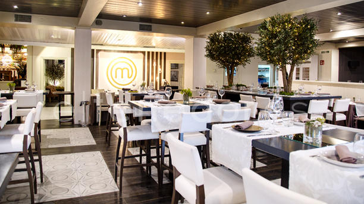
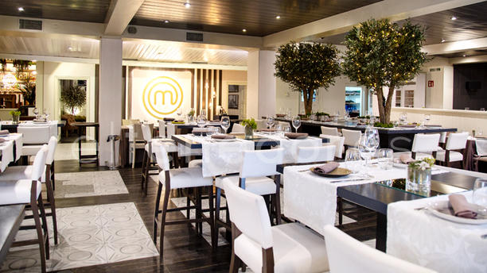
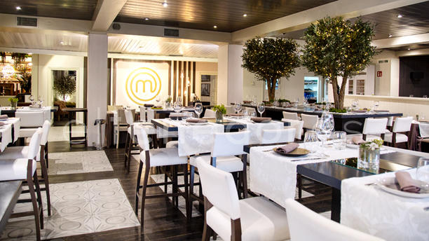

La candidata de Unidas Podemos a la Comunidad de Madrid, Isabel Serra, ha advertido esta mañana que en su proyecto
político no caben compañías como Uber o Cabify “que tributan en paraísos fiscales y precarizan el empleo”. Y ha atacado
también a la banca. Lo ha hecho en un desayuno informativo organizado precisamente por Cabify y el Banco Sabadell. “Nuestro
proyecto está pensado para el bienestar de las mayorías sociales, no para el interés de entidades como Uber o Cabify que tributan
en paraísos fiscales y precarizan el empleo” ha asegurado la candidata de Podemos en el acto organizado por Nueva Economía Forum
esta mañana en uno de los hoteles más lujosos de Madrid, el Westin Palace. Isabel Serra arremetió contra el sector de las VTCs, al que
Podemos se opone de manera radical, y denunció la “uberización” de la economía. Se da la circunstancia de que el acto estaba patrocinado
por la firma española Cabify. En el desayuno informativo, que también contaba con el mecenazgo del Banco Sabadell, la candidata podemita
también atacó al sector bancario. Defendió que su proyecto político está “pensado para los jóvenes, no para las entidades bancarias que
anuncian despidos masivos, aunque tengan beneficios. Hay que decirlo alto y claro, la banca es responsable de los desahucios”.

Desayunos
Carta
Cocktails